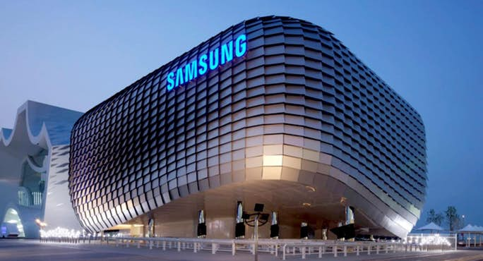
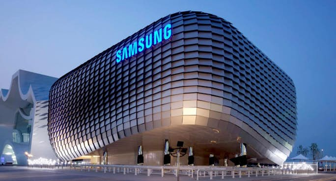

JHONCODE
SAMSUNG
Samsung is a South Korean multinational conglomerate headquartered in Samsung Town, Seoul. It comprises numerous affiliated businesses, most of them united under the Samsung brand, and is the largest South Korean chaebol (business conglomerate). Samsung was founded by Lee Byung-chul in 1938 as a trading company. Over the next three decades, the group diversified into areas including food processing, textiles, insurance, securities, and retail. Samsung entered the electronics industry in the late 1960s and the construction and shipbuilding industries in the mid-1970s; these areas would drive its subsequent growth. Following Lee's death in 1987, Samsung was separated into four business groups – Samsung Group, Shinsegae Group, CJ Group and Hansol Group. Since 1990, Samsung has increasingly globalised its activities and electronics; in particular, its mobile phones and semiconductors have become its most important source of income. As of 2017, Samsung has the 6th highest global brand value.
 
